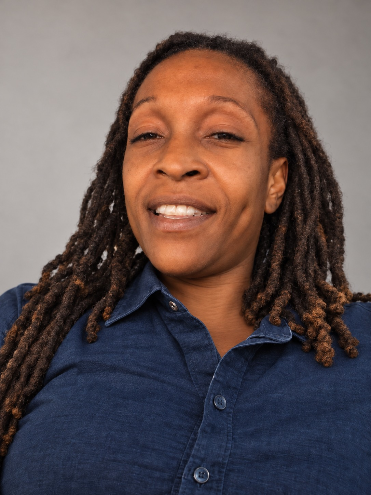
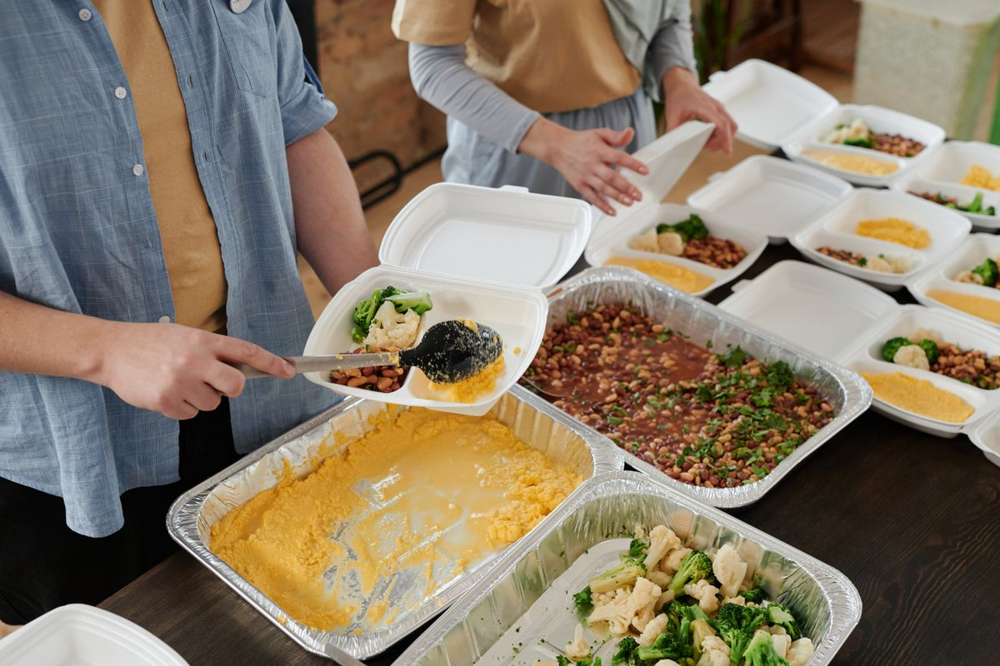

Mobile showers
Planned access to safe, private showers and personal hygiene supplies through mobile outreach. No unit, service route, or opening date is confirmed.
Explore ways to give ↗︎DIGNITY FIRST. POSSIBILITY ALWAYS.
Developing mobile showers, hygiene outreach, and practical support for women experiencing homelessness throughout the San Francisco Bay Area.

WHY WE EXIST
No one should have to navigate a difficult season feeling invisible.
Beyond Walls New Paths is a developing mission founded by San Francisco native and Resource Navigator Keisha Garrett. Our entire mission focuses on women experiencing homelessness throughout the San Francisco Bay Area. We are planning mobile showers, hygiene supplies, outreach, and resource navigation. Direct services have not launched; the independent resource directory is available to everyone.
Our story & vision ↗︎
MEET THE FOUNDER
A San Francisco native and Resource Navigator, building a women-focused outreach mission around faith, lived experience, and practical care.
Meet Keisha & explore her vision ↗︎WHERE WE BEGIN
Proposed services will launch only when funding, equipment, staffing, safety arrangements, and local approvals are in place.
Planned access to safe, private showers and personal hygiene supplies through mobile outreach. No unit, service route, or opening date is confirmed.
Explore ways to give ↗︎Planned hygiene kits, new clothing, and food support as resources and appropriate safety arrangements allow.
What guides us ↗︎Planned compassionate outreach and connections to independent health, food, employment, and housing services. Browse public resources now; placements and assistance are not guaranteed.
Find local resources ↗︎
YOU BELONG IN THE NEXT CHAPTER
Whether you are looking for a resource or looking for a way to help, there is a place to start.